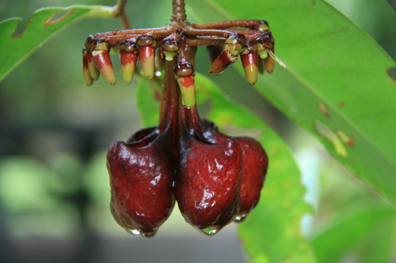

Marcgraviaceae
Marcgravia Family / Shingle Plant Family
Marcgraviaceae is a family of flowering plants belonging to the order Ericales (Asterids), native exclusively to the Neotropics (Central and South America, Caribbean). The family comprises mostly woody lianas and epiphytic shrubs, famous for their often pendulous inflorescences bearing highly modified, nectar-producing bracts (nectaries) that attract bird and bat pollinators. Some species exhibit striking heterophylly.
Overview
Marcgraviaceae includes about 7 genera and around 130 species, restricted entirely to the tropical regions of the Americas. Most members are woody vines (lianas) or shrubs that grow as epiphytes on trees, using adventitious roots to climb or attach. They are typically found in humid tropical rainforests and cloud forests.
The family is particularly noted for two distinctive features. Firstly, many species, especially in the genus Marcgravia, display marked heterophylly: the juvenile climbing stems have small, rounded leaves pressed tightly against the host tree trunk (shingle leaves), while the mature, reproductive branches bear larger, differently shaped leaves that project outwards. Secondly, the inflorescences are often highly modified, typically hanging downwards (pendulous) and featuring specialized, brightly colored, pitcher-like or sac-like bracts that function as extrafloral nectaries. These structures produce copious nectar, attracting vertebrate pollinators, primarily hummingbirds and bats, as well as attracting insects which may also be eaten by pollinators. The family has limited direct economic importance, though some species are occasionally cultivated as curiosities.
Quick Facts
- Scientific Name: Marcgraviaceae
- Common Name: Marcgravia Family, Shingle Plant Family
- Number of Genera: Approximately 7
- Number of Species: Approximately 130
- Distribution: Neotropical (Central/South America, Caribbean).
- Habit: Mostly woody lianas and epiphytic shrubs.
- Evolutionary Group: Eudicots - Asterids - Ericales
Key Characteristics
Growth Form and Habit
Primarily woody lianas (climbing using adventitious roots) or epiphytic shrubs. Less commonly terrestrial shrubs or small trees.
Heterophylly
Many species, particularly in Marcgravia, exhibit strong heterophylly. Juvenile climbing stems possess small, often rounded or heart-shaped leaves that are closely appressed to the substrate (host tree trunk), resembling shingles. Mature, free-hanging reproductive stems bear larger leaves of a different shape (e.g., elliptical, lanceolate) that stand away from the support.
Leaves
Leaves are arranged alternately along the stem. They are simple, usually with entire (smooth) margins, and often have a leathery texture. Stipules are generally absent or minute.
Inflorescence and Nectaries
Inflorescences are typically terminal, often arranged in racemes or umbel-like clusters, and frequently hang downwards (pendulous). The most striking feature is the presence of highly modified, often brightly colored (red, orange, yellow, green) nectariferous bracts associated with the flowers or pedicels. These bracts are transformed into pitcher-like, sac-like, or boat-shaped structures that function as extrafloral nectaries, producing large amounts of nectar to attract pollinators (birds, bats, mammals) or insects.
Flowers
Flowers are usually actinomorphic (radially symmetrical), mostly bisexual, and typically 4- or 5-merous.
- Calyx: 4 or 5 sepals, usually free or slightly fused at the base, often thick and persistent.
- Corolla: 4 or 5 petals, which can be free or fused at the base. In Marcgravia, the petals are completely fused into a cap (calyptra) that detaches and falls as the flower opens. Petals are often whitish, greenish, or reddish.
- Androecium: Stamens vary in number, from few (e.g., 3-5) to numerous (up to ~40 or more). They are usually free or slightly fused at the base, sometimes attached to the corolla base.
- Gynoecium: The ovary is usually superior, composed of 2 to many fused carpels. It typically forms a single locule with deeply intruding parietal placentas (making it appear multi-locular), or sometimes truly multi-locular with axile placentation. Ovules are numerous. A single style is present (sometimes very short or absent), topped by a lobed or capitate stigma.
Fruits and Seeds
The fruit is typically a fleshy or leathery berry or a capsule that splits open irregularly or septicidally. It contains numerous small seeds, often embedded in a fleshy pulp.
Field Identification
Identifying Marcgraviaceae relies heavily on recognizing their distinctive habit, inflorescence structures, and geographic location:
Primary Identification Features
- Liana or Epiphytic Shrub Habit: Most members climb on or perch on other trees.
- Alternate Leaves: Leaves are arranged singly along the stem, not in pairs.
- Modified Nectariferous Bracts: Look for the unique pitcher-like or sac-like nectaries associated with the (often pendulous) inflorescence. This is the most diagnostic feature.
- Neotropical Distribution: The family is restricted to Central/South America and the Caribbean.
- Heterophylly (in Marcgravia): Observe if juvenile climbing stems have small, appressed 'shingle leaves' distinct from larger adult leaves.
Secondary Identification Features
- Flowers 4- or 5-merous: Often with numerous stamens.
- Calyptrate Corolla (Marcgravia): Petals fused into a cap that falls off.
- Superior Ovary: Positioned above other floral parts.
- Fruit a Berry or Fleshy Capsule: Containing many small seeds.
Seasonal Identification Tips
- Flowering Season: Varies within the tropics. The unique inflorescences with nectaries are the best feature for identification during this time.
- Fruiting Season: Berries or capsules develop after flowering.
- Vegetative Season: The combination of liana/epiphytic habit, alternate leaves, and potentially heterophylly (shingle leaves) can help identify Marcgravia species.
Common Confusion Points
The unique nectaries usually prevent confusion, but vegetative lianas might be mistaken for others:
- Araceae (Arum Family): Many climbers/epiphytes (Monstera, Philodendron, Rhaphidophora) have alternate leaves, and some exhibit heterophylly or appressed juvenile leaves. However, Araceae are monocots with very different inflorescence structure (spadix and spathe) and lack the specialized nectariferous bracts of Marcgraviaceae.
- Other Lianas/Epiphytes: Various families contain tropical climbers (e.g., Bignoniaceae, Apocynaceae, Fabaceae), but they differ in leaf arrangement (often opposite or compound), flower structure, fruit type, and lack the characteristic nectariferous bracts.
Field Guide Quick Reference
Look For:
- Woody liana or epiphyte (Neotropics)
- Alternate simple leaves
- Heterophylly (shingle leaves in juvenile Marcgravia)
- Pendulous inflorescence with modified nectariferous bracts (pitcher/sac-like)
- Flowers 4- or 5-merous
- Stamens often numerous
- Superior ovary
- Fruit a berry or fleshy capsule
Key Variations:
- Nectary shape and color
- Presence/absence of heterophylly
- Petals free vs. fused into calyptra
- Stamen number
- Inflorescence structure (raceme vs. umbel)
Notable Examples
The family is defined by its unique adaptations for pollination:

Marcgravia spp.
(Marcgravia, Shingle Plant)
The largest genus, famous for its pronounced heterophylly (shingle leaves on juvenile stems) and pendulous, umbel-like inflorescences where modified bracts form pitcher-like nectaries hanging below the fertile flowers. Petals are fused into a calyptra. Pollinated by birds and bats.

Norantea guianensis
(Red Hot Poker Vine - misleading name)
A liana or shrub known for its long, spike-like, often reddish inflorescence bearing numerous prominent, boat-shaped or hood-like nectariferous bracts along its length, each subtending a small flower. Petals are free.

Souroubea spp.
(Souroubea)
Lianas or shrubs with inflorescences typically bearing paired, sac-like or spurred nectariferous bracts associated with each flower along a raceme. Petals are free. Found from Mexico to South America.
Phylogeny and Classification
Marcgraviaceae belongs to the large order Ericales, which is part of the Asterid clade of Eudicots. This order is incredibly diverse, containing families ranging from woody plants (like Ericaceae - heaths/blueberries, Ebenaceae - ebony, Lecythidaceae - Brazil nut) to herbaceous groups (like Primulaceae - primroses, Balsaminaceae - impatiens, Polemoniaceae - phlox).
Within Ericales, Marcgraviaceae is placed in a clade that also includes Balsaminaceae (Impatiens family) and Tetrameristaceae. This grouping suggests shared ancestry despite significant differences in morphology and habit (e.g., Balsaminaceae are mostly succulent herbs with zygomorphic flowers). The evolution of the unique nectariferous bracts and the associated vertebrate pollination syndromes are key features of Marcgraviaceae's divergence.
Position in Plant Phylogeny
- Kingdom: Plantae
- Clade: Angiosperms (Flowering plants)
- Clade: Eudicots
- Clade: Asterids
- Order: Ericales
- Family: Marcgraviaceae
Evolutionary Significance
Marcgraviaceae is evolutionarily significant for:
- Specialized pollination systems: The development of elaborate nectariferous bracts represents a remarkable adaptation for attracting vertebrate pollinators (birds, bats, arboreal mammals) in the Neotropics.
- Heterophylly: The distinct juvenile and adult leaf forms in Marcgravia provide a model for studying developmental plasticity and adaptation to different microhabitats during a plant's life cycle (climbing vs. reproductive phases).
- Liana evolution: Contributes to understanding the evolution of the climbing habit within the Ericales order.
- Biogeography: Its strictly Neotropical distribution is important for understanding the diversification of Ericales within the Americas.
- Floral morphology: The variation in petal fusion (free vs. calyptrate) and nectary structure showcases morphological diversification related to function.